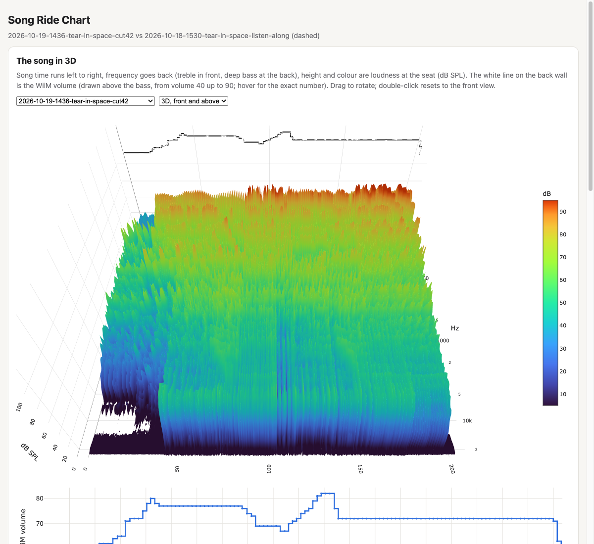

The front page is the work I'd lead with. This page is the rest: what I build on a Saturday because a problem is in front of me and I want to know the answer. None of it is in one lane, and that's the point.
30+
repositories, most of them since 2025
~40
outside systems and APIs connected
7
languages shipped: Python, TypeScript, Swift, C#, SQL, AutoLISP, VBA
1
habit behind all of it: measure, don't guess
Measured, not guessed
Living Room Tune-Up — tuning a stereo with a measurement microphone
Audio · Python
My living-room system sounded boomy and I couldn't say why. So I bought a calibrated measurement microphone, put it at ear height on the couch, and wrote a test suite: sweeps and real songs played through the system, recorded at the seat, and compared against a saved baseline after every change. One day of tuning, every step measured.
The measurements found what my ears couldn't name. The sub was sitting almost 20 dB above the vocals, one room note at 44 Hz towered over everything, and the sub and the towers were cancelling each other at 95 Hz. Flipping the sub's phase filled that hole. Two narrow cuts took down the room note. Moving the crossover let the towers carry the punch, so the bass keeps growing as the volume goes up instead of thinning out.
+19.1+6.7 dB
bass over vocals, 25 to 70 Hz
+29.1+12.0 dB
the 44 Hz room boom
-14.2-9.9 dB
deepest hole, 70 to 150 Hz
98.7102.6 dB
loudest clean level at the seat

One song in 3D: time, frequency, and loudness at the seat. The line on the back wall is the volume knob, second by second.
Why it matters: I had never done acoustics. The method is the same one I use on software: get a baseline, change one thing, measure again, and prove the test repeats before trusting it. Seven songs recorded before and after moved the same way on every track, and everything above 100 Hz stayed within half a decibel, which is how I knew the numbers were real.
PythonCalibrated micSignal analysisPlotly 3DBefore / after
A music engine — rebuilding recommendations from my own library
Data · APIs
I exported fifteen years of playlists and turned them into a database: 111 playlists collapsed into 10,734 distinct recordings, matched by recording code because the same song showed up under several IDs. On top of it I built the tool the streaming service took away: plug in a song and get similar songs back, ranked on the audio features, plus a builder that finds music I have never picked and writes the playlist straight into my account.
Why it matters: the interesting part is what failed. I tried three ways to recommend music from my own playlists and measured all three dead: 90% of my tracks appear in exactly one playlist, so there is no signal to learn from. The data also showed that record label predicts what I like three times better than genre. I wrote the failures down next to the wins.
DuckDBSpotify Web API · OAuthDiscogsMusicBrainz · ListenBrainzRank fusion
Built for a real person
Coachbook
Product
A playbook maker for volunteer coaches. Most coaching tools handle schedules or offer a video library. This makes the thing a coach needs in the gym: a printable, age-appropriate playbook, one page per drill, with the court diagram, the setup, how players rotate, and what to say.
Why it matters: one engine, any sport. Every page comes from a small data file and one locked print template, so a layout change updates every page at once. I coached a full volleyball season from it.
PythonSVG diagramsPrint layout
Saithis
macOS · Swift
A Mac menu bar app that reads selected text aloud. Press a hotkey and the selection lands in a reading window: play it, pause it, pick it back up, hear it in a different voice, or save it to a file. It runs cloud voices and local ones that never send the text off the machine.
Why it matters: I had the vision for exactly how it should work, and I built it with AI doing the Swift. Knowing what to build, and directing it until it's right, is the skill.
SwiftNative macOSLocal + cloud speech
An adventure game
Game
A story game that runs in the browser, built for my daughter and me. It narrates out loud, keeps a party and an inventory, and saves the game so the story picks back up where it stopped.
Why it matters: a complete game, front end to back end, built for fun.
Python APIWeb front endText-to-speech
Maps on paper
Geospatial
A printed report for comparing schools: one page per school, each with its own map and a real drive time, and a summary page that wraps everything up. Addresses are geocoded, routes are computed, and the maps are drawn and captured automatically.
Why it matters: from a list of addresses to a finished, printed report with no hand work in between.
Census geocoderOSRM routingLeaflet · OpenStreetMap
Bigger ideas
bluefour
Private · in progress
A desktop application that treats AI context as a project, not a chat session. A chat starts from nothing every time and forgets what you gave it. In bluefour everything a project knows (its files, folders, notes and past conversations) lives in one document you save and reopen. It borrows from the tool I grew up in: in CAD you put things on layers and turn them on and off, and here the layers decide what the model sees for this piece of work.
Why it matters: before writing any code I researched and wrote seven long pieces on how CAD documents, code editors and AI tools really work, so the design rests on facts. Glad to walk through it in a conversation.
ElectronTypeScriptSQLiteLocal models
AI inside AutoCAD
Described only
A plugin I built for myself. It installs into AutoCAD and updates itself, with docked panels for the drawing in front, the block library and a searchable index of every drawing. On top of it, a local bridge that lets an AI agent work inside AutoCAD: place and reference drawings, check its own counts, and leave everything unsaved for a person to review.
Why it matters: a set-up job that takes a person most of a morning took the agent sixteen minutes, and it caught a revision that arrived halfway through.
C#AutoLISPAutoCAD .NET APIAgents
What's next
A VR game
Exploring
The next field I want to learn: building my own game for a VR headset. Nothing to show yet. It's here because this is how every project on this page started.
What I've connected
About 40 outside systems
Integration
Most real work is getting two systems to talk. These are the ones I've connected in code, each with its own sign-in, limits and way of shaping data.
AI models
Anthropic, OpenAI, OpenRouter, Groq, Perplexity, and local models through Ollama
Microsoft
Graph API, SharePoint and Lists, Entra sign-in, Azure Maps, Fabric
Job data
Greenhouse, Lever, Ashby, Workable, SmartRecruiters, Rippling, Adzuna, USAJobs, Common Crawl, and eight more
Music
Spotify, Discogs, MusicBrainz, ListenBrainz
Maps
US Census geocoder, Nominatim, OSRM, OpenStreetMap
Personal data
Garmin, GitHub, market data
Hardware
LoRa mesh radios, AutoCAD's programming interfaces, a measurement microphone
Smaller things that run every day
A printed morning brief
At 6:00 AM a job reads my mail, three calendars and my task list, and prints one two-sided page. I mark it up with a pen; a photo of the page updates the list.
Local transcription
Recorded conversations become clean, speaker-labelled notes without the audio ever leaving my Mac, then get filed by person and meeting.
Shared CI workflows
One set of scheduled security and link audits that every repository of mine reuses, maintained in one place. Public ↗
Why show this
A stereo, a playlist, a volleyball practice, a school decision. None of these were assignments. Give me a problem I've never seen and I'll learn the field, measure it, and build the thing that solves it.